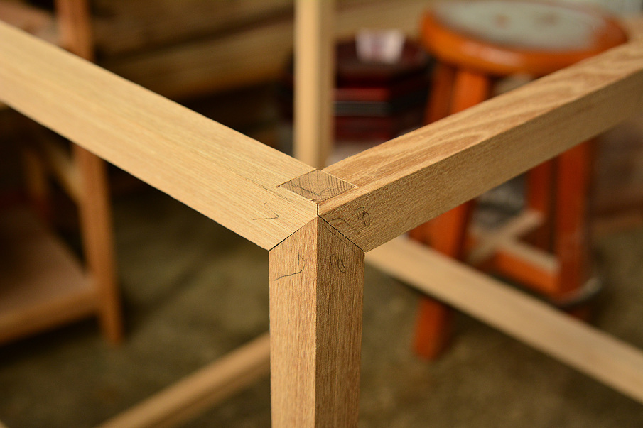

Mortise and Tenon
A mortise and tenon joint is a type of joint that connects two pieces of wood or other material. Woodworkers around the world have used it for thousands of years to join pieces of wood, mainly when the adjoining pieces connect at an angle of 90 degree. In its basic form, it is both simple and strong. There are many variations of this type of joint, but the basic mortise and tenon comprises two components: the mortise hole and the tenon tongue. Mortise and tenon joints are the preferred style of joint for furniture and cabinetwork. It's strong, durable, and little affected by the expansion or contraction of wooden members as a result of temperature and humidity changes. When shaped properly, mortise and tenon joints can be decorative elements in the finished appearance of a piece.
.jpeg)
A tenon is a projection on the end of a timber for insertion into a mortise.
A mortise is a cavity cut into a timber to receive a tenon.
The tenon, formed on the end of a member generally referred to as a rail, fits into a square or rectangular hole cut into the corresponding member. The tenon is cut to fit the mortise hole exactly and usually has shoulders that seat when the joint fully enters the mortise hole. Usually the tenon is taller than it is wide. The joint may be glued, pinned, or wedged to lock it in place.
History
This is an ancient joint dating back 7,000 years. The first examples, tusked joints, were found in a well near Leipzig - the world's oldest intact wooden architecture. It has also been found joining the wooden planks of the "Khufu ship", a 43.6 m long vessel sealed into a pit in the Giza pyramid complex of the Fourth Dynasty around 2500 BC. The oldest known use dates from the Early Neolithic Linear Pottery culture, where it was used in the constructing of the wooden lining of water wells.
It has also been found in ancient furniture from archaeological sites in the Middle East, Europe and Asia. Many instances are found, for example, in ruins of houses in the Silk Road kingdom of Cadota, dating from the first to the fourth century BC. In traditional Chinese architecture, wood components, such as beams, brackets, roof frames and struts, were made to interlock with perfect fit, without using fasteners or glues, enabling the wood to expand and contract according to humidity. Archaeological evidence from Chinese sites shows that, by the end of the Neolithic, mortise-and-tenon joinery was employed in Chinese construction. The thirty sarsen stones of Stonehenge were dressed and fashioned with mortise-and-tenon joints before they were erected between 2600 and 2400 BC.
In traditional Chinese architecture, wood components, such as beams, brackets, roof frames and struts, were made to interlock with perfect fit, without using fasteners or glues, enabling the wood to expand and contract according to humidity. Archaeological evidence from Chinese sites shows that, by the end of the Neolithic, mortise-and-tenon joinery was employed in Chinese construction.
It has also been found in ancient furniture from archaeological sites in the Middle East, Europe and Asia. Many instances are found, for example, in ruins of houses in the Silk Road kingdom of Cadota, dating from the first to the fourth century BC. In traditional Chinese architecture, wood components, such as beams, brackets, roof frames and struts, were made to interlock with perfect fit, without using fasteners or glues, enabling the wood to expand and contract according to humidity. Archaeological evidence from Chinese sites shows that, by the end of the Neolithic, mortise-and-tenon joinery was employed in Chinese construction. The thirty sarsen stones of Stonehenge were dressed and fashioned with mortise-and-tenon joints before they were erected between 2600 and 2400 BC.
In traditional Chinese architecture, wood components, such as beams, brackets, roof frames and struts, were made to interlock with perfect fit, without using fasteners or glues, enabling the wood to expand and contract according to humidity. Archaeological evidence from Chinese sites shows that, by the end of the Neolithic, mortise-and-tenon joinery was employed in Chinese construction.
.png)